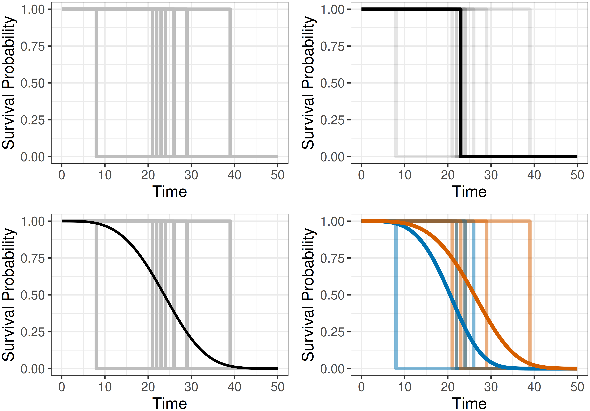
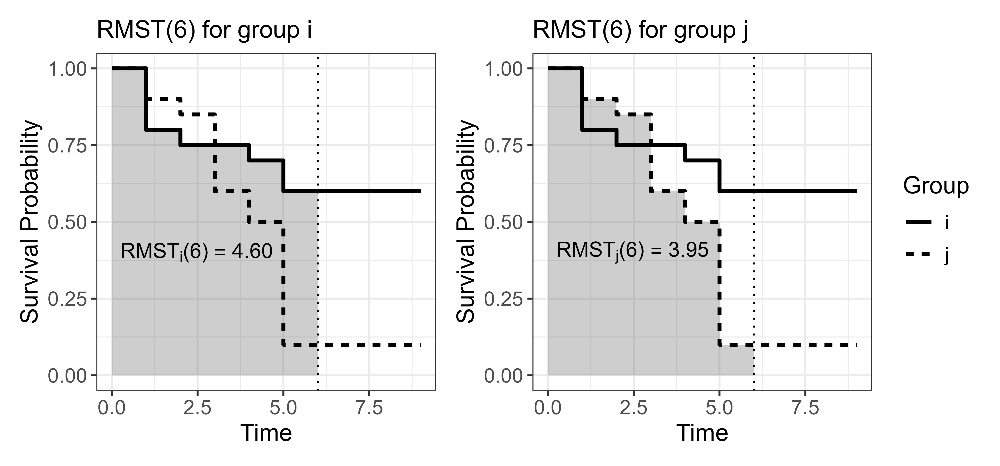

5 Survival Task
A machine learning task specifies a mathematical problem to be solved by an algorithm (Section 2.2). Formally, a task is a mapping \(g: \mathcal{X}\rightarrow \mathcal{Y}\) with three components: a description of the input space \(\mathcal{X}\), a description of the target space \(\mathcal{Y}\), and a description of the estimation procedure that learns \(g\) from data. A survival task is a machine learning task in which the target space \(\mathcal{Y}_S\) corresponds to a survival prediction type (Section 5.1), and the learning algorithm is designed to handle censoring and/or truncation while targeting that prediction type (as in the methods introduced in Part III).
Throughout this chapter, let \(\mathcal{X}\subseteq \mathbb{R}^p\) be the feature space. The censoring mechanism does not affect the definition of the prediction types, hence this chapter does not distinguish between right-, left-, or interval-censoring when defining \(\mathcal{Y}_S\).
5.1 Survival prediction types
A survival prediction type specifies the output space \(\mathcal{Y}_S\) (the codomain of \(g_S\)). Four types are commonly distinguished:
- Survival distribution: Probability of the event occurring over time (Section 5.2);
- Relative risk: A scalar quantity that represents the risk of the event and is meaningful only in comparison to other individuals in the sample (Section 5.3);
- Survival time or time-to-event: A point prediction of the time at which the event of interest will occur (Section 5.4);
- Prognostic index: A risk score usually based on a linear predictor (Section 5.5).
Survival distribution predictions are probabilistic as they return a full distribution over time. Survival time predictions are deterministic point predictions in the sense that they return a single scalar value, though uncertainty remains due to underlying variance. Relative risk and prognostic index predictions do not directly predict when or if the event of interest will occur. Instead, they produce scores that can be used to rank or compare an individual’s risk to others in the same cohort.
The term relative risk is used throughout this book to emphasize that these types of predictions should only be interpreted in comparison to others in the cohort; this is revisited in Section 5.3. This contrasts with predictions such as survival probability estimates, which quantify an individual’s probability of surviving to a given time point and are therefore directly related to event risk, but remain interpretable independently.
The four prediction types are closely related. Relative risks and survival time predictions can be derived from a predicted survival distribution, though the reverse does not hold in general as a single survival time or risk score does not uniquely determine a probability distribution. Both prognostic index and time-to-event predictions can usually be interpreted as a type of relative risk prediction. Under (often strict) assumptions, prediction types can be converted between one another. In fact, many algorithms appear to target a given prediction type but internally compute another as an intermediate step. This pattern will appear throughout Part III; for example, the prognostic index is computed in linear models before being transformed to a survival distribution prediction (some examples in Chapter 11).
Despite their close connection, it is essential to keep discussion of prediction types distinct as they are not directly comparable. For example, it is not meaningful to compare a relative risk score from one model to a survival distribution prediction of another without first transforming the distribution prediction. Even within a single prediction type, interpretations can be confused. For example, in some literature a larger value of a risk score implies higher risk of the event, whereas in other sources, a larger value implies lower risk. Distinction of prediction types is also critical for evaluation as each prediction type naturally aligns with different types of metrics, a topic returned to throughout Part II.
In applied predictive modeling, direct survival time predictions are uncommon as they can be challenging to estimate and evaluate reliably under censoring, particularly when prediction requires extrapolation beyond the observed follow-up period. Instead, practitioners often report distribution-derived summaries such as \(\tau\)-year survival probabilities or the predicted median survival time. Similarly, the prognostic index is less frequently used as a direct prediction target and more commonly used for model interpretation or inference, whereas relative risk predictions are common in applications such as resource allocation and risk stratification. However, as discussed below, a prognostic index can usually be interpreted as a relative risk.
Figure 5.1 illustrates the information provided by the different prediction types based on a Weibull accelerated failure time model (Section 11.3). The prognostic index is omitted as it would appear visually identical to the relative risk prediction type. The top-left panel shows tabular survival data using the six patients from the tumor data set (Table 3.2). The top-right panel shows predicted survival times, for each observation this is a single scalar value representing the estimated event time (here, expectation with 95% confidence interval). The bottom-left panel visualizes relative risk predictions; here the score is the negative log of the predicted expected survival time, centered at zero across the six patients, so positive values indicate higher than average risk and negative values lower than average risk. Finally, the bottom-right panel shows survival distribution predictions, where each observation’s predicted survival function is visualized over time.
![Graphical illustration of prediction types for six tumor patients. Top-left panel is a table with columns id, age, sex, complications, days, and status, with each row's id cell colored to match the patient's color in the other panels. Top-right panel is filled circles with lines on both sides indicating expected survival times and confidence intervals, ranging from about 1700 to 3200 days. Bottom-left panel is vertical lines with solid circle endpoints showing predicted relative risk scores centered around zero, indicating different risk profiles for each patient, shows a range from around +0.25 to -0.25. Bottom-right panel is six smooth survival probability curves, one per patient, decreasing over time from (0,1) toward (3000,0).](Figures/survtsk/fig-p1c6-predict-types.png)
tumor data set and a Weibull accelerated failure time model. Tabular survival data (top-left) can be used by an algorithm to make various prediction types, each conveying different information. Survival times (top-right) provide a single number estimating the time until an event takes place. Relative risk scores (bottom-left) compare the risk of the event between subjects within the same sample. Survival distributions (bottom-right) estimate the probability of remaining event-free over time.
5.2 Predicting distributions
Predicting a survival distribution means estimating the probability of an individual’s event time over the interval from time point \(0\) to \(\infty\). In principle, such predictions are defined over the continuous non-negative real numbers, \(\mathbb{R}_{\geq 0}\). In practice, the form of the prediction depends on the modeling approach: parametric models typically define predictions over continuous time, whereas several non- and semi-parametric approaches represent predictions through discrete time points. Even when predictions are continuous, they are often evaluated or visualized on a discrete-time grid.
Theoretically, distributional prediction can target any of the distribution-defining functions introduced in Section 3.1, though predicting \(S(\tau)\) or \(h(\tau)\) is most common. Mathematically, the survival task associated with the distribution prediction type is defined by \(g_S: \mathcal{X}\rightarrow \mathcal{S}\), where \(\mathcal{S}\subseteq \operatorname{Distr}(\mathbb{R}_{\geq 0})\) denotes a set of distributions on \(\mathbb{R}_{\geq 0}\). For competing risks, distributional prediction usually returns one cause-specific function per event type, so the number of prediction functions is multiplied by the number of causes. More generally, in the multi-state setting, distributional prediction generalizes to time-indexed transition probabilities between states, represented as a transition probability matrix at each time point of interest.
Communicating a predicted distribution over time can be a daunting task, especially in settings such as healthcare with communication from a clinician to patient. Instead, distribution predictions are commonly used to derive time-specific survival probabilities, which represent the probability of surviving beyond a relevant time point. For example, the probability of being alive ten years after a diagnosis of Huntington’s disease. Predicting ‘\(\tau\)-year survival probabilities’ is sometimes mistakenly framed as a classification problem, in which a model predicts whether an event will occur by a fixed time. This is misleading as traditional classification models cannot incorporate observations censored before the time horizon of interest, and discarding such observations would bias any results (Loh et al. 2025). See Chapter 18 for the appropriate use of classification models in this context.
Survival distributions can also be used for decision making by establishing thresholds on survival probabilities. For example, in an engineering context, a survival model might be used to estimate the reliability of a jet engine over time, with a maintenance rule defined such that the engine is serviced once the predicted survival probability falls below a predefined reliability threshold (which could be as high as 0.95).
Another source of potential confusion can arise when interpreting survival distribution predictions in the single-event setting. In reality, an event either occurs or does not occur at a particular time, making it natural to question what an individual’s predicted survival distribution actually represents. Figure 5.2 illustrates the goal of survival distribution prediction. The top-left panel shows the idealized ‘real-world’ survival trajectories for multiple individuals, each represented by a Heaviside step function that drops from \(1\) to \(0\) at the event time. The top-right panel highlights one such individual trajectory. The bottom-left panel shows the objective of survival distribution prediction: a smooth survival function summarizing the average behavior of these individual event trajectories across a population. Finally, the bottom-right panel shows the same events stratified by a binary covariate, producing one survival distribution for each subgroup. In machine learning, this idea is generalized by conditioning on the full covariate vector, potentially yielding a different predicted survival distribution per individual. Hence, an individual’s predicted survival distribution can be interpreted as the average survival experience among a large group of individuals sharing the same covariate profile.

5.3 Predicting relative risks
Predicting relative risk scores refers to estimating a value that ranks individuals in a cohort according to their predicted risk of experiencing the event. These scores are meaningful only in comparison to other individuals evaluated on the same scale; they cannot be interpreted in isolation, nor can they be compared to scores produced by a different model, except under very strong assumptions. The interpretation of these scores can also differ across model classes, parameterizations, and even software implementations. For example, some models produce scores where larger values correspond to higher risk, whereas others produce scores where smaller values correspond to higher risk. To avoid ambiguity, throughout this book larger values always correspond to higher risk and smaller values correspond to lower risk. In machine learning terms, the relative risk prediction task is the problem of estimating \(g_S: \mathcal{X}\rightarrow \mathbb{R}\).
As an example of this prediction type, consider three individuals, \(\{i,j,k\}\) with predicted risks \(\{0.5, 10, 0.1\}\), respectively. From these values, two broad types of conclusion can be drawn.
- Conclusions comparing individuals:
- The corresponding ranks for \(\{i,j,k\}\) are \(\{2,3,1\}\).
- \(k\) has the lowest risk and \(j\) the highest risk.
- The risk of \(i\) is slightly higher than that of \(k\), whereas \(j\)’s risk is substantially higher than both.
- Conclusions comparing risk groups:
- Thresholding at \(0.4\) classifies \(k\) as low-risk and \(i\) and \(j\) as high-risk.
- Thresholding at \(1.0\) classifies \(i\) and \(k\) as low-risk and \(j\) as high-risk.
As in other domains, differences in relative risks should always be interpreted cautiously. In the example above, \(j\)’s relative risk is \(100\) times that of \(k\); however, if \(k\)’s absolute probability of experiencing the event is \(0.0001\), then \(j\)’s absolute probability remains small at \(0.01\).
Estimation and interpretation of risks in the competing risks setting follows similar principles. However, one must take care to clearly identify if the task of interest is to predict risks for each of the \(q\) causes, \(g_S: \mathcal{X}\rightarrow \mathbb{R}^q\), or a single all-cause risk. In multi-state models, the notion of a single scalar ‘risk’ is less clearly defined and any risk-based summaries should be interpreted with caution.
5.3.1 Distributions and risks
In general, it is not possible to uniquely recover a survival distribution from a relative risk score, except in very specific cases (discussed in Section 5.5). The reverse direction, deriving a risk score from a predicted survival distribution, is more common. One stable approach to compute a risk score is by summing the estimated cumulative hazard, which provides a measure of expected mortality for individuals with similar covariate profiles (Ishwaran et al. 2008) (see Section 12.2.4 for intuition from random survival forests and Section 7.1.2 for a related calibration measure). The expected mortality for an individual \(i\) is defined as,
\[ \sum_{\tau \in \mathcal{T}} -\log(\hat{S}(\tau \mid \mathbf{x}_i)) = \sum_{\tau \in \mathcal{T}} \hat{H}(\tau \mid \mathbf{x}_i), \]
where \(\hat{S}(\cdot \mid \mathbf{x}_i)\) is the predicted survival function, \(\hat{H}(\cdot \mid \mathbf{x}_i)\) is the corresponding cumulative hazard, and \(\mathcal{T}\) is the set of observed time points. Larger values indicate greater expected mortality and thus a higher risk profile. As a concrete example, consider two individuals, \(i\) and \(j\), with predicted survival probabilities at times \(\mathcal{T}= \{0,1,2,3\}\):
\[ \begin{aligned} &(\tau, \hat{S}(\tau \mid \mathbf{x}_i)) = (0, 1), (1, 0.8), (2, 0.4), (3, 0.15), \\ &(\tau, \hat{S}(\tau \mid \mathbf{x}_j)) = (0, 1), (1, 0.6), (2, 0.4), (3, 0.35). \end{aligned} \]
From these values alone, it is not immediately obvious which individual would be considered at higher risk. The corresponding cumulative hazards are,
\[ \begin{aligned} &(\tau, \hat{H}(\tau \mid \mathbf{x}_i)) = (0, 0), (1, 0.22), (2, 0.92), (3, 1.90), \\ &(\tau, \hat{H}(\tau \mid \mathbf{x}_j)) = (0, 0), (1, 0.51), (2, 0.92), (3, 1.05). \end{aligned} \]
Using the expected mortality approach yields relative risk scores of
\[ \begin{aligned} &\sum_{\tau \in \mathcal{T}} \hat{H}(\tau \mid \mathbf{x}_i) = 0 + 0.22 + 0.92 + 1.90 = 3.01, \\ &\sum_{\tau \in \mathcal{T}} \hat{H}(\tau \mid \mathbf{x}_j) = 0 + 0.51 + 0.92 + 1.05 = 2.48. \end{aligned} \]
Under this method, the risk score of \(i\) is approximately \(1.2\) times higher than that of individual \(j\).
5.4 Predicting survival times
Predicting a survival time refers to estimating when an individual will experience the event of interest. Mathematically, this corresponds to estimating \(g_S: \mathcal{X}\rightarrow \mathbb{R}_{>0}\), that is, predicting a single positive value on \((0,\infty)\).
Survival time predictions may initially appear attractive as they seem intuitive and easy to interpret. However, evaluating survival time predictions is practically very challenging and as such reliance on these predictions is ill-advised. To illustrate this, consider an individual censored at time \(\tau=5\). There is no way to know if the event would have occurred at \(\tau=6\) or \(\tau=600\); all that can be known is that the event did not occur before \(\tau=5\). As a result, it is impossible to assess how close a time prediction is to the true, unobserved event time. Even when a prediction is clearly incorrect, the magnitude of its error cannot be quantified. For the same individual censored at \(\tau=5\), suppose a model predicts a survival time of \(\hat{t}=3\). This prediction is clearly wrong as the event did not occur before \(\tau=5\). However, the prediction might only be slightly wrong if the true event time were \(\tau=6\), or extremely wrong if the true event time were \(\tau=600\).
The challenge of censoring is particularly complex for evaluating survival time predictions, which reduce the prediction to a single scalar quantity. By contrast, probabilistic predictions make use of the survival process over time and can thus enable meaningful evaluation before the outcome time (for example, with the scoring rules in Chapter 8), while risk-based predictions are relative and can exploit comparative information such as pairwise ordering (for example, with the discrimination measures in Chapter 6). For these reasons, this book recommends predicting and evaluating survival distributions and only then deriving time-oriented summaries.
Event history analysis faces similar challenges due to the presence of censoring. The term ‘survival time’ is also ill-defined unless the event or transition of interest is explicitly specified, as it may refer either to the time until a particular event or transition or, more generally, to the time until any event occurs. In multi-state models, one possible alternative is to estimate sojourn times, which represent the expected time spent in a given state and can be derived from estimated transition probabilities. Sojourn times are particularly well defined in Markov and semi-Markov models, where they arise naturally from stochastic process theory (Ibe 2013). However, although sojourn times may be estimable, censoring still makes their evaluation challenging.
5.4.1 Times and risks
Converting a survival time prediction to a risk prediction is conceptually straightforward, as survival times encode natural ordering. An individual predicted to survive longer is, by definition, at lower overall risk. Formally, if \(\hat{t}_i,\hat{t}_j\) denote predicted survival times and \(\hat{r}_i,\hat{r}_j\) are associated rankings, then
\[ \hat{t}_i > \hat{t}_j \Rightarrow \hat{r}_i < \hat{r}_j. \]
The reverse transformation, from ranking to survival time, is generally not possible without strong assumptions as relative risk scores are usually abstract quantities that do not map directly to meaningful survival times.
5.4.2 Times and distributions
Moving from a survival time to a distribution prediction is uncommon. Given the availability of models that directly predict survival distributions, and the difficulty of evaluating survival time predictions, there is little motivation for this transformation. It is nonetheless possible, as in regression settings, to construct a distribution around a central estimate \(\hat{t}\) by assuming a parametric form. For example, one could use a truncated normal distribution on \(\mathbb{R}_{\geq 0}\) with location \(\hat{t}\) and standard deviation \(\sigma\), where \(\sigma\) is assumed or estimated. Such constructions depend on strong distributional assumptions and are rarely used in practice.
It is more common to reduce a prediction from a probability distribution to a survival time by attempting to compute the mean or median of the distribution. For a non-negative event time, the expected survival time can be computed from the survival function using the ‘Darth Vader rule’ (Muldowney et al. 2012),
\[ \mathbb{E}[Y] = \int^\infty_0 S_Y(y) \ \,\mathrm{d}y. \tag{5.1}\]
However, (5.1) requires distributions to be proper but as discussed in Section 3.1.1, this is often not the case for estimated survival distributions, especially those that depend on non-parametric estimators (Section 3.5.2). Heuristics have been proposed to address this issue, including linear extrapolation of the survival curve to zero, or an immediate drop to zero at the final time point. However, these can introduce bias into estimated survival times (Han and Jung 2022; Sonabend et al. 2022).
The survival time could also be reported as the median survival time, defined as the earliest time at which the predicted survival probability drops to \(0.5\),
\[ \hat{t}_{50} = \inf\{\tau: \hat{S}(\tau) \leq 0.5 \}. \]
However, this quantity is only defined if the estimated survival curve reaches \(0.5\) within the observed follow-up period, which is never guaranteed.
An alternative is to summarize the predicted distribution with the restricted mean survival time (RMST) (Andersen et al. 2004; Han and Jung 2022). Rather than integrating over the entire time axis as in (5.1), the RMST truncates the integral at a finite horizon:
\[ \operatorname{RMST}(\tau) = \int^\tau_0 S_Y(y) \,\mathrm{d}y. \]
It follows from (5.1) that \(\operatorname{RMST}(\infty) = \mathbb{E}[Y]\). Whereas (5.1) represents the average survival time over \([0,\infty)\), the RMST represents the average survival time up to \(\tau\),
\[ \operatorname{RMST}(\tau) = \mathbb{E}[\min(Y, \tau)], \tag{5.2}\]
which treats all events occurring after \(\tau\) as if they occurred at \(\tau\). The RMST is well-defined even when the predicted distribution is improper, provided that the survival function is defined up to \(\tau\); in practice, \(\tau\) is usually chosen within the range of observed follow-up times.
Say individuals are observed over a six-year time period and administrative censoring is present so that \(\mathbb{E}[Y]\) cannot be reliably computed. One can compute \(\operatorname{RMST}(6)\) to provide an interpretable truncated summary such that when the mean survival time exists, \(\operatorname{RMST}(6) \leq \mathbb{E}[Y]\). This results in a meaningful statement such as: “the average survival time is at least \(\operatorname{RMST}(6)\)”, or “over a six-year horizon, the restricted mean survival time is \(\operatorname{RMST}(6)\)” (Figure 5.3).
The RMST is commonly used to summarize the effect of covariates, particularly treatments in a healthcare setting. For example, suppose a researcher is interested in understanding how a treatment affects three-year and six-year survival for a given disease. Assume the predicted survival curves for the treated group \(i\) and untreated group \(j\) are
\[ \begin{aligned} (\tau, \hat{S}(\tau \mid \mathbf{x}_i)) = (0, 1.00), (1, 0.80), (2, 0.75), (3, 0.75), (4, 0.70), (5, 0.60), \\ (\tau, \hat{S}(\tau \mid \mathbf{x}_j)) = (0, 1.00), (1, 0.90), (2, 0.85), (3, 0.60), (4, 0.50), (5, 0.10). \\ \end{aligned} \]
The corresponding RMSTs at \(\tau=3\) and \(\tau=6\) are, using a left-endpoint Riemann sum approximation (so the value at \(\tau=5\) is used for the interval \([5,6)\)) with unit intervals,
\[ \begin{aligned} \operatorname{RMST}_i(3) &\approx 1.00 + 0.80 + 0.75 = 2.55, \\ \operatorname{RMST}_j(3) &\approx 1.00 + 0.90 + 0.85 = 2.75, \\ \operatorname{RMST}_i(6) &\approx 1.00 + 0.80 + 0.75 + 0.75 + 0.70 + 0.60 = 4.60, \\ \operatorname{RMST}_j(6) &\approx 1.00 + 0.90 + 0.85 + 0.60 + 0.50 + 0.10 = 3.95. \\ \end{aligned} \]
Over the three-year follow-up period, group \(j\) is expected to remain event-free for approximately \(0.20\) years (\(2.4\) months) longer than group \(i\). In contrast, over the six-year interval, group \(i\) is expected to remain event-free for approximately \(0.65\) years (\(7.8\) months) longer than group \(j\). Computing the RMST at these two horizons provides interpretable summaries: the treatment may offer no short-term benefit within three years, and may even be associated with short-term harm, but confers a meaningful advantage over a longer six-year horizon.
These results, visualized in Figure 5.3, illustrate a key feature of the RMST. By fixing the time horizon \(\tau\), the contribution of survival differences after \(\tau\) is ignored. As the RMST at \(\tau=6\) only summarizes the survival curve up to six years, survival differences after this point do not affect the summary. Even if members of group \(i\) were to survive many years longer than members of group \(j\), the RMST at \(\tau=6\) treats all event times after six years as if they occurred at that time, a consequence of (5.2). As a result, the RMST difference over the six-year horizon remains modest, even though the long-term survival difference, if it were estimable, could be substantial.

5.5 Prognostic index predictions
In medical terminology, a prognostic index is a quantity that summarizes an individual’s risk of experiencing the event of interest based on observed risk factors. A prognostic index is closely related to a relative risk score (Section 5.3), but the two terms emphasize different aspects of the prediction. A relative risk score is any scalar prediction whose ordering reflects relative risk. A prognostic index additionally emphasizes an interpretable model-specific mapping from covariates to that scalar prediction.
Formally, a prognostic index is:
\[ \hat{r}_i = \psi(\hat{g}(\mathbf{x}_i)), \]
where \(\hat{g}\) is a scalar prediction (such as a relative risk), and \(\psi\) is a transformation chosen so that the resulting quantity has the desired scale, sign, and interpretation. In later chapters, \(\psi\) is specifically referred to as a response function. For simple linear models, the prognostic index is a transformation of the linear predictor, \(\eta_i := \mathbf{x}_i^\top\boldsymbol{\beta}\) where \(\mathbf{x}_i \in \mathbb{R}^p\) are covariates and \(\boldsymbol{\beta}\in \mathbb{R}^p\) are model coefficients. For more flexible models, \(\hat{g}\) may be non-linear.
A prognostic index can serve several purposes, including:
- Scaling and/or normalization: for example, to improve interpretability and visualization;
- Ensuring meaningful results: for example, \(\psi(\boldsymbol{\eta}) = \exp(\boldsymbol{\eta})\) transforms covariates to act multiplicatively on the resulting prognostic score, which is appropriate for models in which the covariates rescale the underlying risk instead of inducing additive shifts (explored further in Section 11.2);
- Interpretability conventions: for example, \(\psi(\boldsymbol{\eta}) = -\boldsymbol{\eta}\) might be sufficient to ensure that larger values correspond to higher risk.
In event history analysis, prognostic indices can be defined analogously, although their precise form depends on the setting and prediction target, for example, whether interest lies in transition-specific, cause-specific, or all-cause risk.
5.5.1 Prognostic index, risks, and times
A prognostic index is naturally interpreted as a relative risk score. When used in this way, it is essential that both the magnitude and sign of the index align with the convention adopted above, meaning that larger values must correspond to a higher risk of experiencing the event.
The reverse transformation, from risk score to prognostic index, does not hold in general. For example, models introduced in Chapter 13 and Chapter 14 directly predict risk scores that are useful for ranking individuals but do not necessarily have an immediate covariate-level interpretation. Therefore, reporting a prognostic index emphasizes that the predicted quantity is interpretable in its own right, much like a survival time prediction.
There is no direct mapping between a prognostic index and survival time. However, a prognostic index may be used to construct a distribution prediction (discussed next), from which a time-based summary can be derived.
5.5.2 Prognostic index and distributions
In general, a prognostic index cannot be uniquely recovered from a predicted survival distribution without additional modeling assumptions. By contrast, constructing a survival distribution conditional on a prognostic index is common in survival analysis. Many survival models predict survival distributions by first estimating a group-wise survival distribution, often using non-parametric estimators (Section 3.5.2), then combine this estimate with an individual’s prognostic index. The manner in which these components are combined is algorithm-specific and discussed in detail in Part III.
As a concrete illustration, one class of models known as ‘proportional hazards models’ (described in full in Section 11.2), construct survival predictions of the form
\[ S_{PH}(\tau \mid \mathbf{x}_i)= S_0(\tau)^{\exp(\hat{g}(\mathbf{x}_i))}, \]
where \(S_0(\tau)\) is known as the baseline survival function, \(\hat{g}(\mathbf{x}_i)\) is the model prediction, and \(\exp(\hat{g}(\mathbf{x}_i))\) serves as a prognostic index.